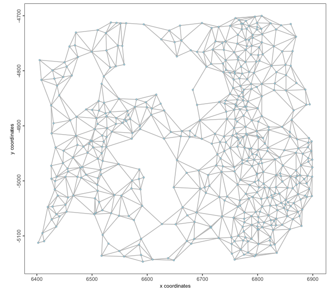
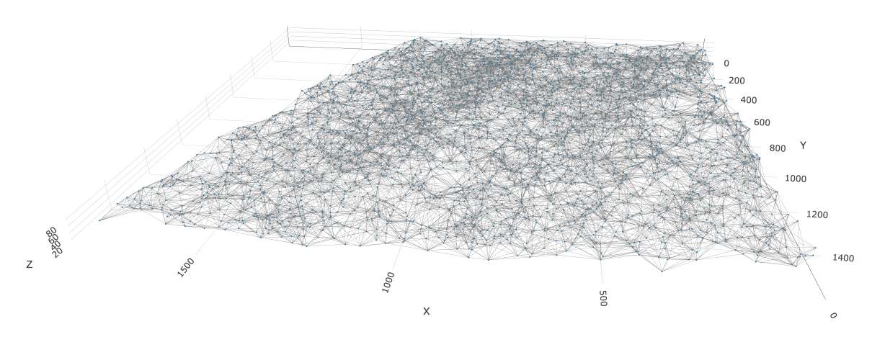
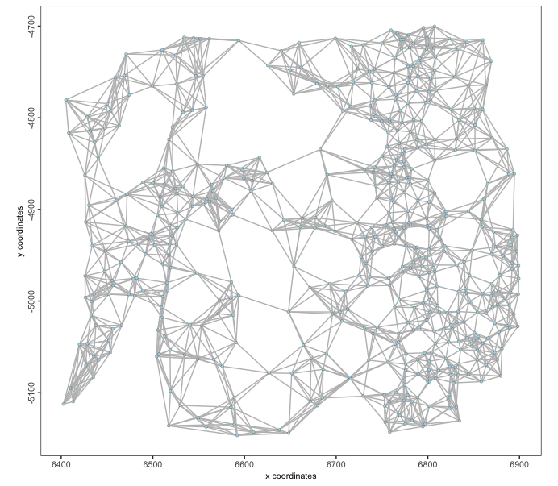
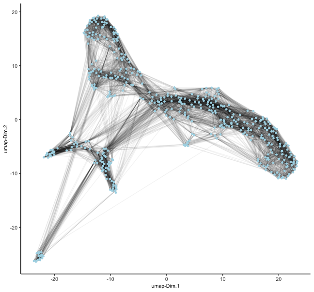
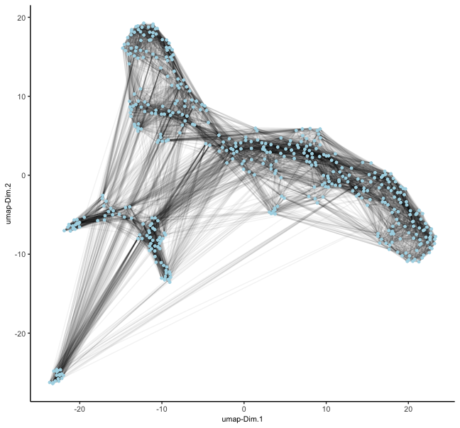

Networks between points can be generated based on coordinates in both spatial and feature embeddings. These allow calculations of how physically similar or phenotypically similar different observations are.
1 Setup and load example dataset
# Ensure Giotto Suite is installed
if(!"Giotto" %in% installed.packages()) {
pak::pkg_install("giotto-suite/Giotto")
}
# Ensure Giotto Data is installed
if(!"GiottoData" %in% installed.packages()) {
pak::pkg_install("giotto-suite/GiottoData")
}
library(Giotto)
# Ensure the Python environment for Giotto has been installed
genv_exists <- checkGiottoEnvironment()
if(!genv_exists){
# The following command need only be run once to install the Giotto environment
installGiottoEnvironment()
}This example uses the ‘vizgen’ (MERSCOPE) and ‘starmap’ mini datasets for 2D and 3D spatial information respectively.
# load the object
mer <- GiottoData::loadGiottoMini("vizgen")
activeSpatUnit(mer) <- "aggregate"
star <- GiottoData::loadGiottoMini("starmap")2 Spatial Networks
Spatial networks are generated based on spatial locations (cell or
spot centroids). They are needed for analyses such as spatial pattern
detection through binSpect(), or cell cell communication
through spatCellCellcom(), and enrichment through
cellProximityEnrichment().
Giotto allows generation of Delaunay and k-nearest neighbors (KNN) networks for spatial networks.
2.1 Delaunay Networks
Key points
- Construction: Created by connecting points in a plane such that no point is inside the circumcircle of any triangle formed by three points.
- Properties: Maximizes the minimum angle of all triangles, avoiding sliver triangles.
- Advantages: Provides efficient nearest neighbor search and natural neighbor interpolation.
A distance cutoff can be applied through the
maximum_distance arg where Delaunay neighbors past a
certain spatial distance apart are not considered. The default is to use
the “upper whisker” value of the distance vector between neighbors; see
the graphics::boxplot() documentation.
Implementations
Giotto provides Delaunay implementations through:
- deldir (default & 2D only)
- RTriangle (2D only)
- geometry (2D or 3D)
2.1.1 2D Delaunay
mer <- createSpatialDelaunayNetwork(mer)
spatPlot2D(mer,
show_network = TRUE,
point_size = 1.2,
network_color = "grey"
)
2.1.2 3D Delaunay
star <- createSpatialDelaunayNetwork(star,
method = "delaunayn_geometry" # use geometry pkg implementation since only this one supports 3D
)
spatPlot3D(star,
spatial_network_name = "Delaunay_network",
show_network = TRUE,
point_size = 1.2,
network_color = "grey",
axis_scale = "real"
)
2.2 Spatial k-Nearest Neighbors networks (kNN)
Generate a spatial network where each point has k neighbors. A
maximum_distance cutoff can also be applied here, but is
not done by default. Giotto implements KNN network generation through
dbscan.
Key points
- Construction: For each point in the dataset, find the k closest points based on a distance metric (often Euclidean distance).
- Properties: May not preserve geometric properties as well as Delaunay triangulation.
- Advantages: KNN is simpler to compute and some spatial statistics operate best with a fixed number of connections per node.
mer <- createSpatialKNNnetwork(mer, k = 8)
spatPlot2D(mer,
spatial_network_name = "knn_network",
show_network = TRUE,
point_size = 1.2,
network_color = "grey"
)
3 Spatial Feature Networks
KNN spatial networks can be created from the feature detections.
mer <- createSpatialFeaturesKNNnetwork(mer)
# this appends the network to the giottoPoints object
mer[["feat_info", "rna"]][[1]]4 Nearest Neighbor Networks
Nearest neighbor networks are used in Giotto to aid in clustering of high-dimensional feature embeddings. Leiden and Louvain clustering are both examples of network community-based clustering approaches. These networks are usually built on top of primary dimension reduction embeddings such as PCA and NMF that help extract and highlight important signatures from the expression information.
4.1 Shared Nearest Neighbor Networks (sNN)
sNN networks are the default NN network generated in Giotto. They are preferred for clustering in high-dimensional spaces since they adapt to local density variations, something crucial for identifying clusters of different densities or sizes.
Key points
- Construction: First, compute the k nearest neighbors for each point (like in kNN). For each pair of points, calculate the number of shared neighbors among their k nearest neighbors. Create an edge between two points if their number of shared neighbors exceeds a threshold.
- Properties: Can be treated as an undirected graph. The number of connections per node can vary.
- Advantages: More robust to variations in local density. Can capture complex cluster shapes and hierarchical structures.
mer <- createNearestNetwork(mer, type = "sNN") # builds sNN on top of PCA space by default
dimPlot2D(mer, show_NN_network = TRUE, nn_network_to_use = "sNN", network_name = "sNN.pca")
4.2 k-Nearest Neighbors Networks (kNN)
Key points
- Construction: For each point in the embedding space, find the k closest points based on a distance metric
- Properties: Results in a directed graph, as the “nearest neighbor” relationship isn’t always symmetric.
mer <- createNearestNetwork(mer, type = "kNN") # builds kNN on top of PCA space by default
dimPlot2D(mer, show_NN_network = TRUE, nn_network_to_use = "kNN", network_name = "kNN.pca")
5 API function
createNetwork() exported from GiottoClass
allows creation of any of the above network types, starting from a
matrix of nodes. These nodes can be n-dimensional
expression information, dimension reduction, or spatial coordinates. The
output is either igraph if as.igraph = TRUE
and data.table otherwise.
topo <- expand.grid(x = 1:nrow(volcano),
y = 1:ncol(volcano))
topo$z <- c(volcano)
topo <- as.matrix(topo)
createNetwork(topo, type = "kNN", k = 8) # returns as igraphIGRAPH 64720af DNW- 5307 42456 --
+ attr: name (v/c), weight (e/n), distance (e/n)
+ edges from 64720af (vertex names):
[1] 1 ->88 2 ->89 3 ->90 4 ->91 5 ->92 6 ->7 7 ->6 8 ->94 9 ->95 10->97 11->97
[12] 12->99 13->12 14->13 15->102 16->102 17->103 18->19 19->18 20->21 21->22 22->21
[23] 23->24 24->25 25->26 26->25 27->115 28->29 29->28 30->31 31->30 32->31 33->120
[34] 34->121 35->36 36->124 37->38 38->37 39->40 40->41 41->40 42->43 43->42 44->45
[45] 45->46 46->45 47->134 48->49 49->48 50->51 51->52 52->51 53->52 54->141 55->56
[56] 56->57 57->56 58->59 59->60 60->59 61->62 62->63 63->62 64->65 65->64 66->67
[67] 67->66 68->69 69->68 70->69 71->158 72->159 73->160 74->161 75->162 76->163 77->165
[78] 78->79 79->78 80->81 81->80 82->83 83->170 84->85 85->172 86->87 87->86 88->1
+ ... omitted several edges
createNetwork(topo, type = "kNN", k = 8, as.igraph = FALSE) # return as data.table from to weight distance
<int> <int> <num> <num>
1: 1 88 0.5000000 1.000000
2: 2 89 0.5000000 1.000000
3: 3 90 0.5000000 1.000000
4: 4 91 0.5000000 1.000000
5: 5 92 0.5000000 1.000000
---
42452: 5303 5130 0.3090170 2.236068
42453: 5304 5306 0.3333333 2.000000
42454: 5305 5303 0.3333333 2.000000
42455: 5306 5131 0.3090170 2.236068
42456: 5307 5131 0.2612039 2.828427
# default weight for kNN was 1 / (d + 1)
# use a custom weight function
createNetwork(topo,
type = "kNN",
k = 8,
as.igraph = FALSE,
weight_fun = function(d) 1 / (d)^2
) from to weight distance
<int> <int> <num> <num>
1: 1 88 1.000 1.000000
2: 2 89 1.000 1.000000
3: 3 90 1.000 1.000000
4: 4 91 1.000 1.000000
5: 5 92 1.000 1.000000
---
42452: 5303 5130 0.200 2.236068
42453: 5304 5306 0.250 2.000000
42454: 5305 5303 0.250 2.000000
42455: 5306 5131 0.200 2.236068
42456: 5307 5131 0.125 2.8284276 Session Info
R version 4.4.1 (2024-06-14)
Platform: aarch64-apple-darwin20
Running under: macOS Sonoma 14.4
Matrix products: default
BLAS: /System/Library/Frameworks/Accelerate.framework/Versions/A/Frameworks/vecLib.framework/Versions/A/libBLAS.dylib
LAPACK: /Library/Frameworks/R.framework/Versions/4.4-arm64/Resources/lib/libRlapack.dylib; LAPACK version 3.12.0
locale:
[1] en_US.UTF-8/en_US.UTF-8/en_US.UTF-8/C/en_US.UTF-8/en_US.UTF-8
time zone: America/New_York
tzcode source: internal
attached base packages:
[1] stats graphics grDevices utils datasets methods base
other attached packages:
[1] Giotto_4.1.3 GiottoClass_0.4.0
loaded via a namespace (and not attached):
[1] colorRamp2_0.1.0 deldir_2.0-4
[3] httr2_1.0.1 rlang_1.1.4
[5] magrittr_2.0.3 GiottoUtils_0.2.0
[7] matrixStats_1.4.1 compiler_4.4.1
[9] png_0.1-8 callr_3.7.6
[11] vctrs_0.6.5 RTriangle_1.6-0.13
[13] pkgconfig_2.0.3 SpatialExperiment_1.14.0
[15] crayon_1.5.3 fastmap_1.2.0
[17] backports_1.5.0 magick_2.8.4
[19] XVector_0.44.0 magic_1.6-1
[21] labeling_0.4.3 utf8_1.2.4
[23] rmarkdown_2.28 UCSC.utils_1.0.0
[25] ps_1.7.6 purrr_1.0.2
[27] xfun_0.47 zlibbioc_1.50.0
[29] GenomeInfoDb_1.40.0 jsonlite_1.8.9
[31] DelayedArray_0.30.0 terra_1.7-78
[33] parallel_4.4.1 R6_2.5.1
[35] RColorBrewer_1.1-3 reticulate_1.39.0
[37] pkgload_1.3.4 GenomicRanges_1.56.0
[39] scattermore_1.2 Rcpp_1.0.13
[41] SummarizedExperiment_1.34.0 knitr_1.48
[43] R.utils_2.12.3 IRanges_2.38.0
[45] Matrix_1.7-0 igraph_2.0.3
[47] tidyselect_1.2.1 rstudioapi_0.16.0
[49] abind_1.4-8 yaml_2.3.10
[51] codetools_0.2-20 curl_5.2.3
[53] processx_3.8.4 lattice_0.22-6
[55] tibble_3.2.1 Biobase_2.64.0
[57] withr_3.0.1 evaluate_1.0.0
[59] desc_1.4.3 pillar_1.9.0
[61] MatrixGenerics_1.16.0 checkmate_2.3.1
[63] stats4_4.4.1 geometry_0.4.7
[65] plotly_4.10.4 generics_0.1.3
[67] dbscan_1.2-0 sp_2.1-4
[69] S4Vectors_0.42.0 ggplot2_3.5.1
[71] munsell_0.5.1 scales_1.3.0
[73] GiottoData_0.2.15 gtools_3.9.5
[75] glue_1.8.0 lazyeval_0.2.2
[77] tools_4.4.1 GiottoVisuals_0.2.5
[79] data.table_1.16.0 fs_1.6.4
[81] cowplot_1.1.3 grid_4.4.1
[83] tidyr_1.3.1 crosstalk_1.2.1
[85] colorspace_2.1-1 SingleCellExperiment_1.26.0
[87] GenomeInfoDbData_1.2.12 cli_3.6.3
[89] rappdirs_0.3.3 fansi_1.0.6
[91] S4Arrays_1.4.0 viridisLite_0.4.2
[93] dplyr_1.1.4 gtable_0.3.5
[95] R.methodsS3_1.8.2 digest_0.6.37
[97] BiocGenerics_0.50.0 SparseArray_1.4.1
[99] ggrepel_0.9.6 rjson_0.2.21
[101] htmlwidgets_1.6.4 farver_2.1.2
[103] htmltools_0.5.8.1 pkgdown_2.1.0
[105] R.oo_1.26.0 lifecycle_1.0.4
[107] httr_1.4.7